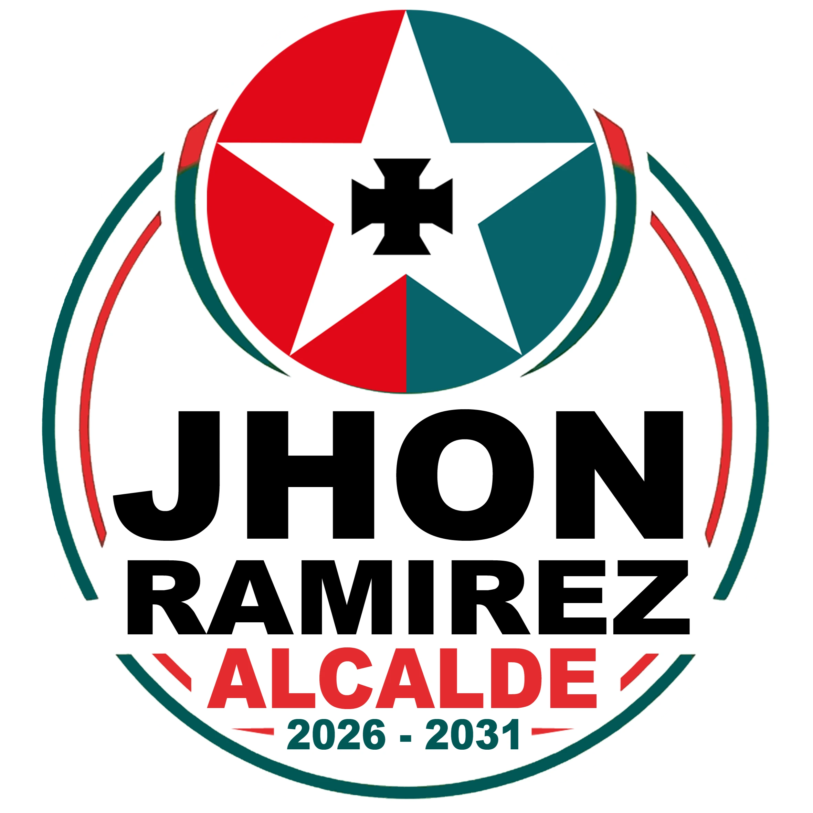
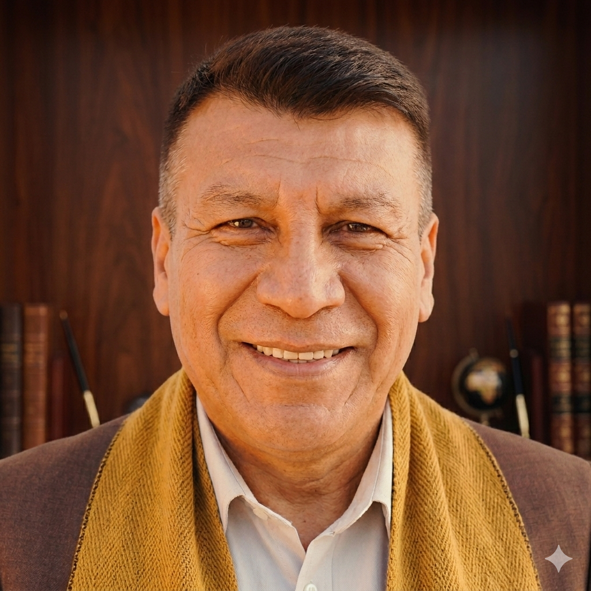

Un compromiso con el desarrollo de nuestra tierra.

Visión de futuro y compromiso con Patacamaya
Patacamaya es el corazón comercial y productivo de la región, pero necesita una administración que esté a la altura de su gente. Mi compromiso es gestionar recursos, modernizar nuestra infraestructura y gobernar con las manos limpias.
"No venimos a prometer, venimos a gestionar el futuro que nuestros hijos merecen."
Un Concejo para el Pueblo.
Fiscalización, legalidad y compromiso real con Patacamaya.